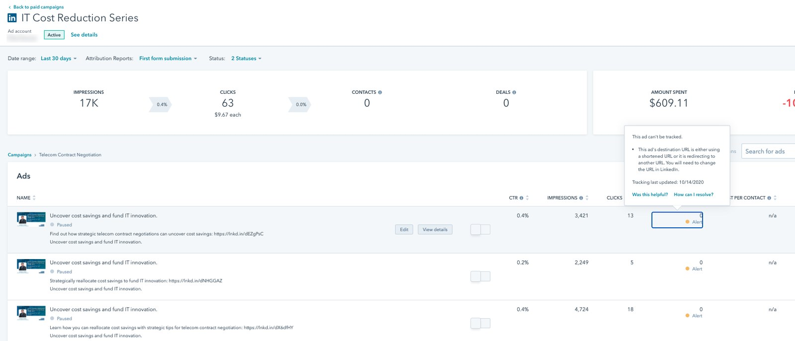
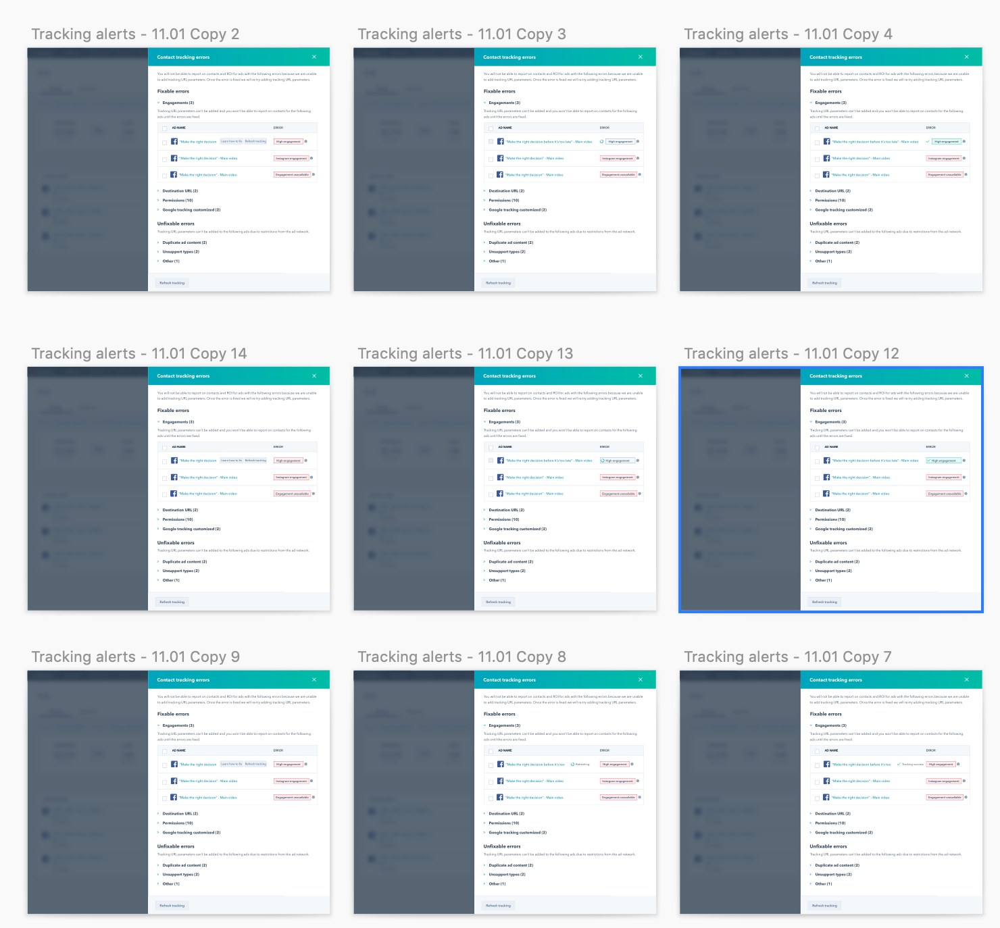
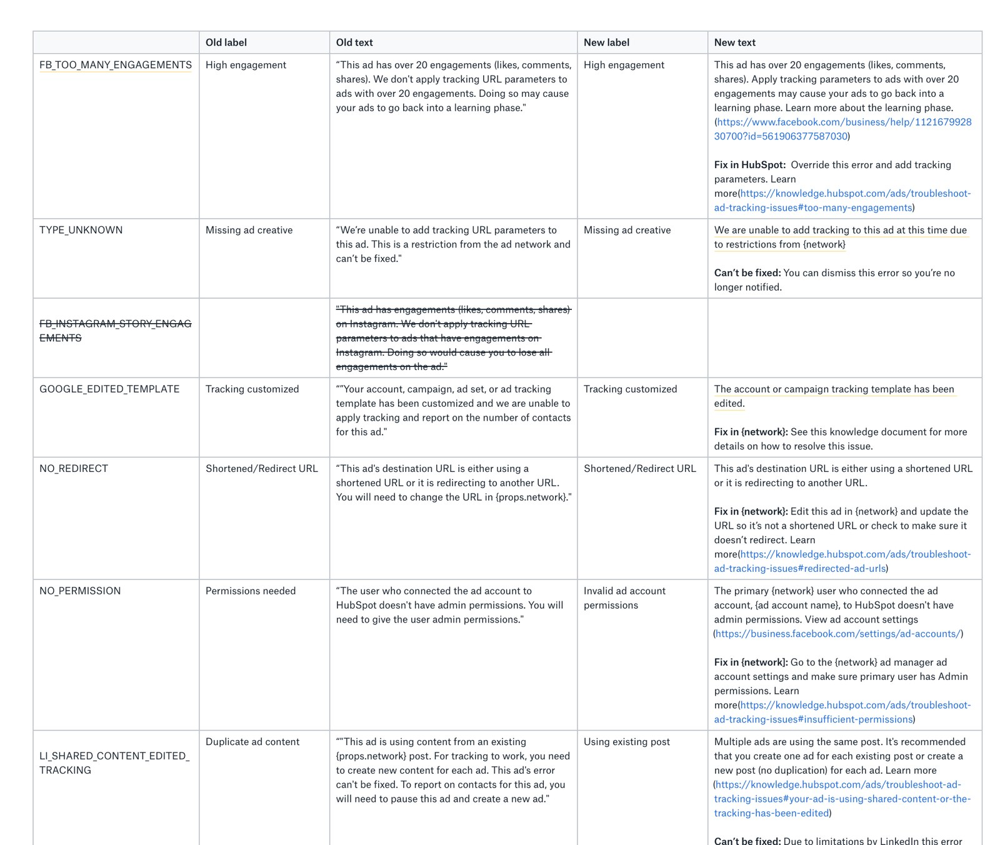
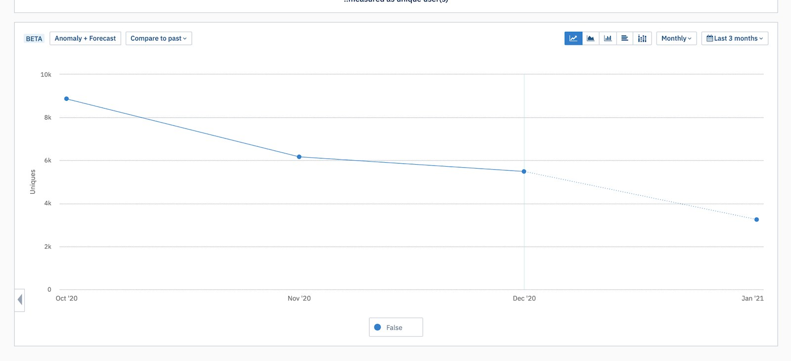
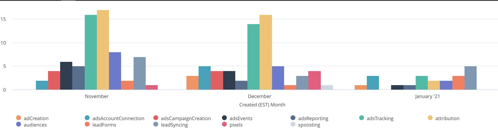

My role
I was the product designer for this redesign, working with my product manager and six front-end and back-end engineers. A product expert helped us dig into support tickets, a user researcher worked with me on the research, and I partnered with another designer who was solving a similar error problem in a different part of HubSpot.
I owned the design of the new tracking experience, from research planning through the final design. I worked with our researcher on the research plan, ran the analysis of the survey results, and led the iterations and the content audit of every error message.
01 · Context
Tracking is how marketers prove their ads are worth paying for
Showing ROI was the main reason marketers managed their ads in HubSpot instead of in each ad network. It's how they show the business how many leads their ads bring in and what return they're getting on what they spend.
HubSpot Ads connects a customer's Facebook, Instagram, LinkedIn and Google ad accounts to HubSpot. To connect a contact back to the ad they came from, HubSpot adds tracking parameters to each ad's link. When that works, marketers see contacts, deals and ROI right next to their spend. When it doesn't, the ad shows zero contacts no matter how many people it brought in, and the marketer has no way to prove what it was worth.
02 · Problem
Ads showed zero contacts, and the only clue was a label you had to hover over
When tracking broke, customers lost the main reason to use HubSpot Ads, and they turned to support to find out what had gone wrong.
There was already a solution for tracking errors, so we started by learning what was wrong with it. In the old design, each error showed up as a small "Alert" label in an ad's contacts column. To see what it meant, you had to hover over it, one ad at a time.

We used three methods to understand what customers were running into. My PM and our product expert went through the support tickets, and I worked with our researcher on a plan that paired a satisfaction survey with usability testing.
The support tickets showed that most of the tracking volume came from customers seeing alerts on ads that were no longer active. In the survey, only about 1 in 4 customers who answered were happy with tracking. When I grouped their comments, the most common pattern was that it was unclear what the issue was and how to resolve it. One customer wrote that it "doesn't tell me how to fix them." Others asked why they were still seeing errors for campaigns they'd deleted.
"Doesn't tell me how to fix them."
Customer, satisfaction survey
In usability testing with five customers, four of the five had a hard time finding all the errors affecting their ads, because they had to move through campaigns and ads to find each one.
How might we help marketers catch and fix tracking problems on their own, so they can trust their ROI without contacting support?
03 · Strategy
We wanted customers to see every error at once instead of one ad at a time
The research left us with three problems. Customers had a hard time seeing how many errors they had, it was unclear what each issue was and how to resolve it, and they were getting alerts on ads that were no longer active.
Our goal was to make it easier for customers to learn when they weren't measuring their ads successfully, and to give them ways to fix the issues that came up. The idea was to stop treating errors as something you found ad by ad. Instead, we'd bring them all into one place, explain each one in plain language, and stop showing errors that no longer mattered.
Before launch, we set three targets to measure it, using the same sources we'd used to research the problem: cut the number of customers seeing tracking errors in half, cut tracking support tickets by 30%, and raise satisfaction with tracking by 20%.
04 · Key decisions
Another designer had the same problem, so we solved it once
A shared error pattern
We went back to the drawing board on how to tell customers their ads had tracking issues and give them an easy way to resolve them. Another designer was solving a similar problem in a different part of HubSpot, so we worked together on a common pattern. That way customers would get the same experience for errors as they moved between different parts of the product.
I explored a panel that listed every error in one place. The iterations looked at how to group errors, including splitting the ones customers could fix from the ones they couldn't, and how to show each step of a fix, from refreshing tracking to confirming it worked.

Rewriting every error message
Since customers didn't understand what the errors meant, we also did a full content audit of every error message and rewrote them. Each one now follows the same structure: what's wrong, and then either how to fix it in HubSpot, how to fix it in the ad network, or a plain note that it can't be fixed and can be dismissed.

Hiding errors on inactive ads
Support tickets showed that alerts on inactive ads drove most of the tracking support volume, so we stopped showing errors on any ad that isn't active.
05 · Final design
Every error now shows up in one count and comes with a fix
With the shared error pattern and the rewritten messages in place, we finalized the design around our original goal: making it easy for customers to see when their ads aren't being tracked and how to fix it.
We brought every tracking error up to a single count at the top of the ads page, which opens one panel where customers can review and resolve them all.
Customers see the number of tracking errors above their campaigns, and each affected campaign is marked with a tracking error. Selecting View errors opens the panel, where errors are grouped by category with a count for each, so similar issues can be worked through together. Each error explains what's wrong and how to fix it, either in HubSpot or in the ad network. Errors that can't be fixed say so, and customers can dismiss them to a separate Dismissed tab.
06 · Impact
Half as many customers ran into tracking errors
In the months after release, the number of customers seeing tracking errors dropped by about half, which met our first target.
Support tickets about ad tracking fell about 80%, from 16 in November to 3 in January, far past our 30% target.


We didn't get to rerun the satisfaction survey, so that target was never measured. The drop in customers seeing errors and the fall in support tickets are the signs we have that tracking got easier for customers.
Reflection
What I'd do differently
Looking back, our solution was more of a bandage than a fix. Customers could finally see every tracking error and how to resolve it, but they were still the ones resolving it. The bigger issue was that the errors existed in the first place.
Next time, I'd push to fix the systems that caused the errors, or have HubSpot fix them for customers wherever it could. Marketers came to HubSpot Ads to see their ROI, and every error they had to fix was time spent checking whether the tool was working instead.